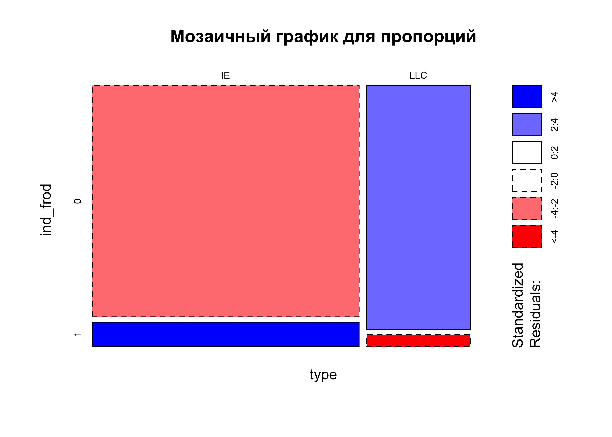

| 0 | 1 | |
|---|---|---|
| IE | 22330 | 2374 |
| LLC | 9142 | 454 |
Продуктовые вопросы
Как определить, какой продавец мошенник, а какой — нет? Какие ещё могут быть схемы мошенничества?
Мы можем предположить, что продавец мошенник по следующим признакам:
- Нереалистично низкая цена на товар (например, скидка больше 30% относительно рыночной цены товаров или больше 2 сигм относительно таких же товаров от других продавцов).
- Аккаунт продавца недавно создан, с большим количеством дорогих товаров (особенно в сочетании с первым пунктом о слишком большой скидке на них).
- Недостаточно много отзывов о продавце (но это будет у любого недавно зарегистрировавшегося продавца).
- Если зафиксированы попытки продавца общаться с покупателем вне площадки (можно установить при анализе общения во внутреннем мессенджере платформы).
- Использование данных ИНН, которые уже использовались на площадке.
- Нетипичное поведение после регистрации, аномальная динамика роста количества заказов
Весьма вероятно, что модель машинного обучения будет обучена на этих и других признаках для определения мошенников.
Другие возможные схемы мошенничества:
- Продажа поддельных товаров известных брендов.
- Регистрация нескольких пользовательских аккаунтов мошенника, где происходит накрутка истории заказов и повышение рейтинга мошенника.
- Фишинговые ссылки, где покупатель переходит на подставной сайт и у него воруют личные данные и данные банковских карт.
- “Схема с предоплатой”. Мошенник требует предоплату за товар и после ее получения пропадает, товар оказывается не выслан, и мошенник был зарегистрирован не под своим именем (данные продавца украдены из слитых баз).
- Фишинговые электронные письма с “выгодными” предложениями, которые маскируются под настоящие письма от маркетплейса, но ведут не на тот сайт, который будет красть данные банковских карт.
Для борьбы с мошенниками можно использовать как автоматические системы (ML модели), так и ручной контроль (модерацию объявлений, проверку продавцов и товаров).
Какие продуктовые фичи могут помочь нашим клиентам избежать неприятных ситуаций с мошенничеством?
- Система рейтинга и отзывов: Позволяет покупателям делиться своим опытом и оценивать продавцов. При этом, должна быть возможность проверки и модерации отзывов, чтобы предотвратить их фальсификацию.
- Тщательная проверка продавцов. Например, при активации продавца требовать скан паспорт и селфи с паспортом с листом, где написана текущая дата и сервис, чтобы подтвердить личность продавца. Такая система верификации реализована в LightDoc. В итоге, если продавец оказался мошенником, то есть его документы и фотография, а селфи с указанием текущей даты защищает от использования слитых баз данных с паспортными данными.
- Безопасная сделка со стороны маркетплейса. Покупатель переводит деньги на специальный счет маркетплейса, и они перечисляются продавцу только после того, как покупатель подтвердил получение товара (как в p2p криптовалютных биржах).
- Чат на платформе: Все общение между продавцом и покупателем происходит внутри платформы. Это позволяет контролировать переписку и предотвратить попытки мошенничества. Например, так реализовано в Avito.
- Автоматический анализ объявлений: Использование AI для анализа объявлений и выявления подозрительных. Например, если цена товара сильно отличается от среднерыночной (больше чем на 2 сигмы), объявление может быть автоматически помечено как подозрительное.
- Возможность жалобы на продавца: Покупатели должны иметь возможность быстро и легко отправить жалобу на продавца, если они считают, что стали жертвами мошенничества.
- Информационная поддержка: Разъяснение клиентам о типичных схемах мошенничества и о том, как себя вести в таких ситуациях.
- Скрытие контактных данных покупателя.
Через какую механику мошенник узнает контакты покупателя? Что можем сделать, чтобы усложнить жизнь фродерам?
На большинстве площадок контактные данные покупателя становятся доступны продавцу после оформления заказа. Мошенник может также попытаться узнать контакты покупателя, предлагая ему общаться вне платформы, например, через личные сообщения, электронную почту или телефон.
Чтобы усложнить жизнь фродерам, можно предпринять следующие шаги:
- Скрыть контактные данные покупателя и использовать алгоритм подмены номера с переадресацией. Таким образом, фродер не сможет написать напрямую в мессенджер whatsapp или telegram. При звонках будет озвучиваться предупреждение, что это звонок от маркетплейса.
- Рекомендовать покупателям и продавцам использовать только внутреннюю систему сообщений. Это поможет защитить личные данные пользователей, и позволит модераторам отслеживать возможные попытки мошенничества.
- Предупреждение пользователей: Информировать пользователей о рисках, связанных с предоставлением своих контактных данных третьим лицам.
- Блокировка ссылок и контактов в сообщениях: В сообщениях между продавцом и покупателем можно запретить отправку ссылок и контактных данных.
- Верификация продавцов: Проверять продавцов при регистрации, требуя подтверждения их личности и банковских реквизитов.
- “Безопасная сделка”: Внедрение системы, при которой деньги переводятся продавцу только после подтверждения получения товара покупателем.
- Использование алгоритмов машинного обучения для выявления подозрительной активности: Это может включать в себя анализ поведения пользователей и продавцов, анализ текста сообщений и так далее.
- Быстрая блокировка и удаление аккаунтов, замеченных в мошенничестве.
- Постоянное обновление и улучшение системы безопасности, регулярный мониторинг и анализ активности на платформе.
Дизайн A/B тестов
Определите основную метрику (дополнительные метрики) и принцип разделения на группы
Из чата ответ на вопрос:
Цель - поймать всех фродеров на этапе онбординга
Если правильно понял вопрос, то количество регистраций останется такое же, мы надеемся, что упадет количество активированных фродеровДалее терминологически группа с ML-моделью будет называться экспериментальная или B-группа, с ручным определением – контрольная (A-группа).
Определение метрик
Основные (core) метрики:
- Доля активированных фродеров. Ожидаем, что эта доля будет статистически значимо ниже в группе с ML-моделью по сравнению с ручным определением.
Дополнительные прокси метрики:
Количество жалоб от покупателей на мошенничество: ожидаем, что эта метрика как минимум не должна расти в экспериментальной группе, а лучше если снизится.
Среднее время выявления мошенника: ожидаем, что оно снизится в группе с применением модели (и не увеличится).
Дополнительные warning метрики:
Доля жалоб обычных мерчантов, которых незаслуженно заблокировали. Ожидаем, что эта метрика не начнет расти.
Среднее время продавца на прохождение активации: не должно увеличиться в экспериментальной группе.
Количество возвратов средств: не должно быть выше в экспериментальной группе
Принцип разделения на группы
У нас неравномерно распределение мерчантов по типу бизнеса: 25200 наблюдений с типом IE (индивидуальный предприниматель) и 9800 с типом LLC (общество с ограниченной ответственностью). Кроме этого, распределение доли выявленных мошенников тоже неравномерно:

Если посчитать тест хи-квадрат, чтобы сравнить пропорции фродеров в разных типах бизнеса, то окажется, что они статистически значимо различаются, p-value порядка 4.51e-49, следовательно при сплитовании групп для A/B теста нам критически важно сбалансировать долю типов бизнеса.
Сделать это можно следующим образом: сначала рассчитать пропорцию продавцов каждого вида бизнеса
Для IE:
25200 / (25200 + 9800) = 0.72(72% всех продавцов)Для LLC:
9800 / (25200 + 9800) = 0.28(28% всех продавцов)
Далее после расчета необходимого количества продавцов рассчитаем деление на группы.
Рассчитайте, какой эффект можно статистически значимо отследить. Укажите его
Зафиксируем значение \(\alpha = 0.05\) для уровня значимости и \(\beta = 0.8%\) для уровня мощности.
Обратимся к историческим данным, которые у нас есть.
На данный момент по этим данным доля фродеров среди активированных пользователей:
1611 / (18290 + 1611) = 0.0809 ~ 8%Мы считаем для бизнеса значимым изменением, если удастся уменьшить долю до 6%. Следовательно, MDE = 8% - 6% = 2% = 0.02
Рассчитаем по формуле для z-теста необходимый размер выборки:
\[ N = \frac{2\sigma^2(z\frac{1-\alpha}{2} + z_{1-\beta})^2}{d_{min}^2} \]
\[ N = \frac{2p(1-p)(z_{0.975} + z_{0.80})^2}{d_{min}^2} = \frac{(2*0.08*0.92)*(1.96+0.84)^2}{0.02^2} = 2876 \]
Размер выборки получился 2876 человек с округлением, теперь необходимо рассчитать количество недель, в течение которых мы будем проводить A/B тест. Для этого будет опираться на известные данные.
Расчет необходимого количества недель проведения теста
Сначала необходимо исключить из данных продавцов, где registration_date = 1970-01-01. Скорее всего, это продавцы, которые зарегистировались до рассматриваемого в датасете периода, либо некорректные данные. Для расчета среднего количества регистраций в неделю такие наблюдения исключаем.
Сначала визуализируем полученные результаты, чтобы оценить сезонность в данных:

Значительной сезонности в течение года не наблюдается, можно рассчитать среднее. Среднее количество регистраций продавцов в неделю получилось ~670. Чтобы набрать 2876 продавцов, нам нужно проводить тест 4.29 недели, с округлением до целого: 5 недель составит длительность проведения A/B теста.
С учетом неравномерности продавцов по типу бизнеса нужно сделать следующее сплитование:
Количество IE:
2876*0.72 = 2070продавецКоличество LLC:
2876*0.28 = 806продавец
Далее делим пополам: в контрольной и тестовой группе по 1035 продавцов типа IE, и 806 продавцов типа LLC.
Однако, поскольку эксперимент идет в течение недель, то нам нужно: когда будут приходить новые продавцы регистрироваться, назначать им случайным образом в контрольную или тестовую группу они попадут с приблизительным соблюдением пропорций 72% и 28%. Сделать это можно с помощью функций в python с обязательным сохранением сида случайности, чтобы иметь возможность воспроизвести разделение на группы. Далее, после того как сплитование проведено, нужно убедиться что нужные пропорции сохранились и доля родавцов IE и LLC в контрольной и тестовой группах остались примерно равными.